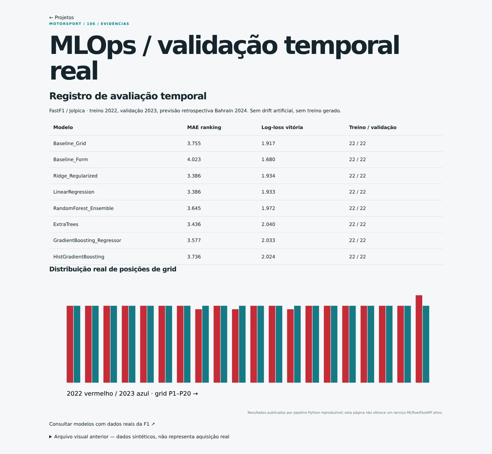

MOTORSPORT / 106 / EVIDÊNCIAS
MLOps / validação temporal real
Carregando análise…
Consultar modelos com dados reais da F1 ↗
Captura da avaliação temporal com resultados reais

MOTORSPORT / 106 / EVIDÊNCIAS
Carregando análise…
Consultar modelos com dados reais da F1 ↗
